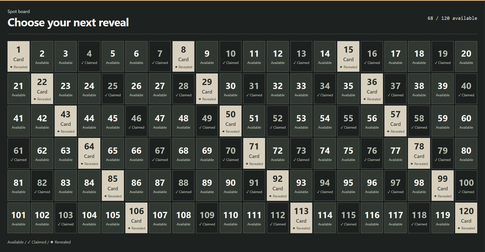
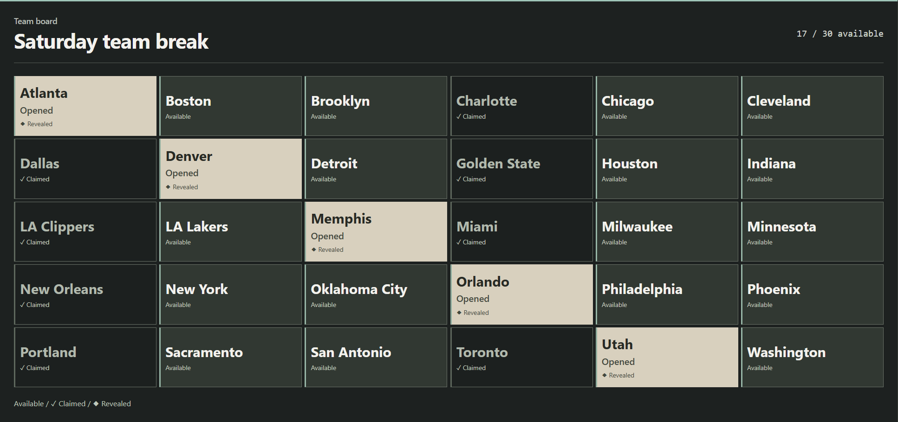
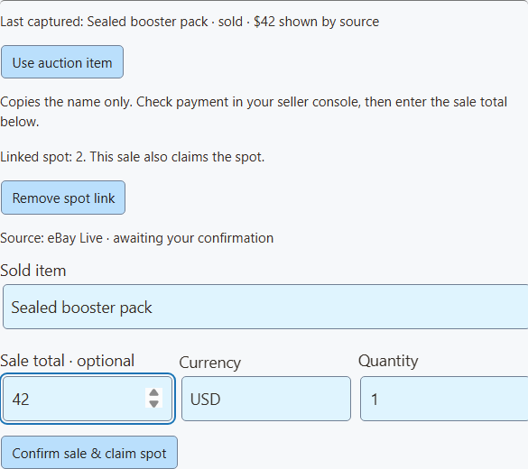
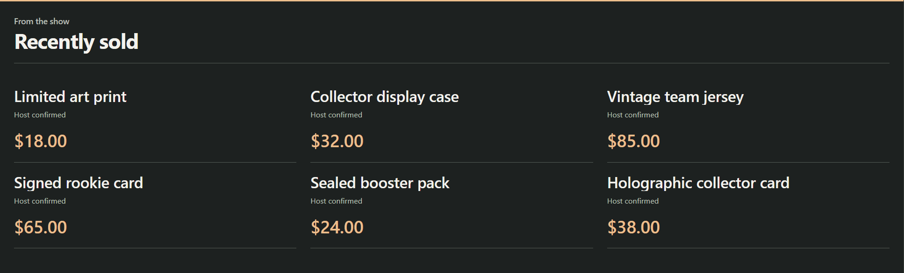
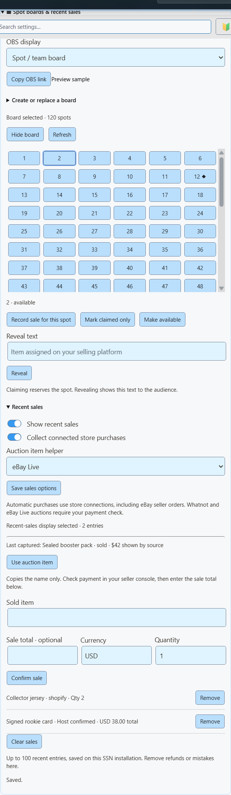

Set up a spot board in 5 steps
- In SSN, open Monetization → Spot boards & recent sales.
- Vali Numbered tiles. For a 20 × 6 grid, use 120 spots and 20 columns. Click Create board.
- Klõpsake Copy OBS link and add it to OBS as a Brauseri allikas at 1920 × 1080.
- When a spot sells, click its tile. Check the payment, then click Record sale for this spot and confirm the sale.
- To show what they got, type it in Reveal text and click Reveal.


| ma tahan… | Click this |
|---|---|
| Hold a spot without logging a sale | Mark claimed only |
| Fix a spot I marked by mistake | Make available |
| Refund a spot and free it up | Refund & reopen (also removes its sale) |
Team breaks
A team break splits the opened cards by team, player, or another named spot.
- Vali Team tiles.
- Paste your team names, one per line. The list sets how many spots there are.
- Mark each bought spot as claimed. Reveal it when you're ready.


During a Whatnot or eBay Live show
- Open your show in SSN and turn on Capture Stream Events. Whatnot needs the show page with its auction footer showing. eBay Live works from the chat or stream page.
- Under Recent sales, set Auction item helper to Whatnot or eBay Live. Click Save sales options.
- When an item sells, click Use auction item to copy its name.
- Check the item and payment on the selling site. Then enter the sale total and currency.
- For a spot, click its tile, then Record sale for this spot. The confirm button becomes Confirm sale & claim spot, which records both at once.
- Add reveal text when you're ready to show the item.


| ma tahan… | Tehke seda |
|---|---|
| Show sales on screen | Lülitage sisse Show recent sales. Use a second OBS source if you want the board and sales at the same time. |
| Refund a sale and free its spot | Refund & reopen on that sale. |
| Remove only the sales entry | Eemalda |
A new board starts fresh. Sales from the old board stay with the old board.
Live capture vs. a store connection
Whatnot and eBay Live capture gives you the item, bids, and auction status. The separate eBay seller connection gets paid orders for chosen listings and can fill recent sales on its own. Don't also confirm those sales by hand, or they'll show twice. Other automatic sources are Shopify, Fourthwall, Ko-fi, and Buy Me a Coffee.
The helper keeps only the last item from the chosen site. It clears after five minutes with no update, and when SSN restarts. Double-check the item if you have several shows open. If the helper is blank, wait for a new auction update after turning it on.
eBay: check payment status in the seller console · Whatnot: failed auction payments
Show recent sales
Keep real purchases on screen after the alert is gone. Pick a short list, a six-card wall, or a strip.


| Where sales come from | How to set it up |
|---|---|
| Your online store | Lülitage sisse Show recent sales ja Collect connected store purchases, seejärel klõpsake Save sales options. Works with new purchases from Shopify, eBay seller, Fourthwall, Ko-fi, and Buy Me a Coffee. |
| Sales you confirm yourself | Enter the item, plus the total and currency if you like. Click Confirm sale. Good for Whatnot, eBay Live, or in-person sales once you've checked payment. These show as Host confirmed. |
To fix mistakes or refunds, click Eemalda on that sale. Click Clear sales to start fresh for a new show.
Prices, history, and privacy
Store feeds don't always include prices, so automatic rows leave the price blank. To show a price, remove that row and confirm it yourself. For several items, enter the total for the entry, not the price of each. SSN never fills in a listing price, top bid, or donation amount instead.
SSN keeps the latest 100 sales on this computer, even after a restart. It only collects from when you turn it on. It doesn't import old orders. Repeat deliveries are ignored (it remembers the last 2,000 IDs). Refunds must be removed by hand.
Buyer names, addresses, payment details, and unrevealed items are never shown. Demo links use clearly marked made-up data.
Show it in OBS
- In the board controls, pick a display: Spot / team board, or recent sales as a list, wall, or strip.
- Klõpsake Copy OBS link. Add it as a Browser Source at 1920 × 1080. Empty space is see-through, so your camera shows behind it.
- Keep SSN running. Your changes show up right away.


Prefer controlling it from OBS? The OBS product control dock has the same buttons.
Optional link settings
| Add to the link | Mida see teeb |
|---|---|
&view=board, sales, wall, või ticker | Picks the layout. |
&limit=6 | Shows up to six recent sales (24 max). |
&prices=0 | Hides prices. |
&label=Recently%20sold | Sets the sales heading. |
&onlytype=shopify,ebay | Only shows sales from those sources. |
Keep the session, password, and server settings from the copied link. If the connection is missing or there's nothing to show, the overlay stays see-through. Setup messages never appear to viewers.
What are those grids on live shows?
| Format | What it is |
|---|---|
| Team spots | Buyers pay for a share of a card break, like one team's cards. The board tracks who claimed each spot. See Whatnot's breaks guide ja eBay's breaks guide. |
| Numbered reveals | A numbered or ball-style grid can track assigned items. Exact rules vary by show. Whatnot's Surprise Sets assign products after a spot sells. See Whatnot's Surprise Sets guide. |
API & Event Flow
Most people can skip this. It's for Stream Deck buttons, scripts, and automations.
API commands and Event Flow
These controls extend the existing commerceControl API. SSN, Stream Deck custom API actions, and the optional OBS dock all read the same getCommerceState response.
{"action":"commerceControl","value":{"command":"boardSpot","data":{"id":"12","status":"claimed"}}}| Command | Fields in data |
|---|---|
boardSave | title, style, columns, count or newline-separated labels |
boardSpot | id, status, result; optional boardId to reject changes if that board has been replaced |
boardVisibility | visible |
saleAdd | title; optional amount, currency, quantity, platform; optional boardId and spotId to claim a spot |
saleRemove | id; optional reopenSpot |
salesClear | none |
salesSettings | visible, automatic; optional auctionSource: whatnot, ebay, or an empty string |
These edits don't send purchase events or trigger paid rewards.
sisse Event Flow, use the Products & Support action. Pick a board or sales command and fill in Board / sales fields. Text values accept variables like {subtitle}. For sale actions, match a confirmed purchase event. If your flow adds sales by hand, turn off automatic collection so they don't show twice.